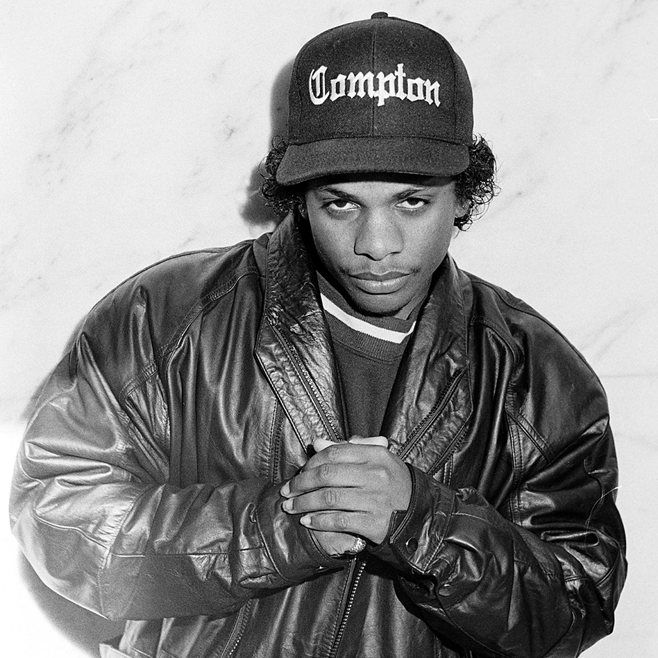
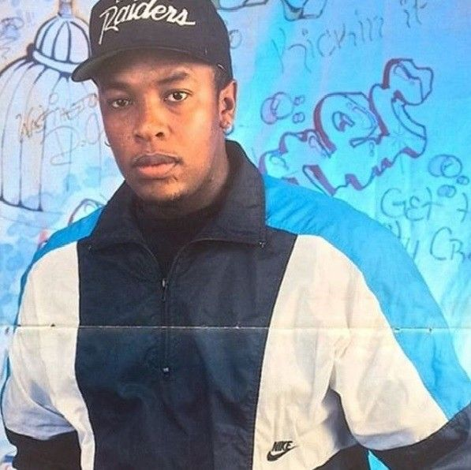
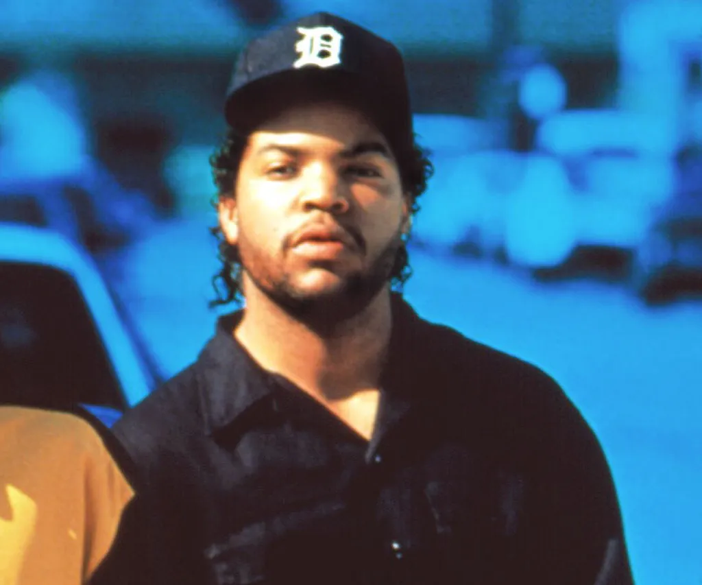
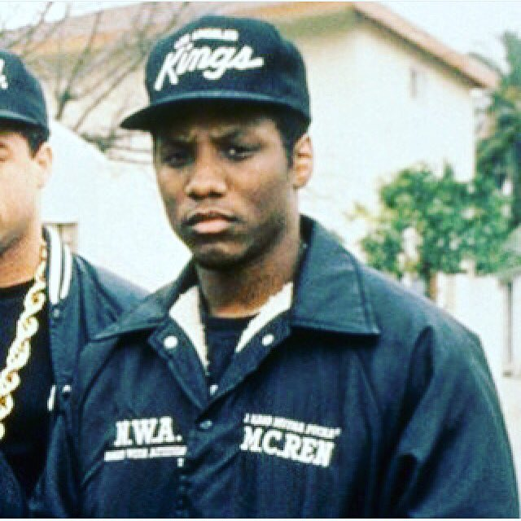
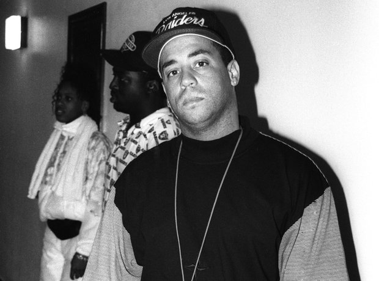

MEMBERS
Eazy-E
Eazy-E is the founder of N.W.A. and owner of the Ruthless Records label.
After
he was kicked out of the 10th grade of high school, he started dealing drugs, which gave him a big profit.
With this money, he and Jerry Heller founded N.W.A. After the stunning success of the Straight Outta
Compton
album, Ice Cube left the band. After that, Eazy becomes the actual leader of the group. After the release
of
Niggaz4Life and the departure of Dr. Dre, the band finally disbanded, and the feud between Eazy-E and Dr.
Dre
raged for the next few years.
Dr.Dre
In 1986, Dr. Dre met rapper Ice Cube, with whom he recorded several songs
for the Ruthless Records rap label
owned by Eazy-E. Later, Dr. Dre, Ice Cube, Eazy-E, Arabian Prince, MC Ren and DJ Yella joined a group,
which
was given the name "Niggas With Attitudes" (from English — "Niggas With Opinions"), or, abbreviated,
N.W.A.
The group worked in the then new genre of "gangster rap", recording aggressive music supplemented with
obscene lyrics about violence, poverty, sex, drugs and confrontation with the police. Their songs were
very
different from the work of their predecessors, and N.W.A quickly became famous, becoming the first real
stars of gangsta rap. Their first full-length album Straight Outta Compton, and especially the song "Fuck
tha Police" included in it, became very popular, despite the complete lack of promotion in the form of
broadcasts on radio or television.


Ice Cube
Upon the success of the song "Boyz-n-the-Hood"—written by Cube, produced by Dre, and rapped by Eazy-E,
helping establish gangsta rap in California—Eazy focused on developing N.W.A which soon gained MC Ren.
Cube
wrote some of Dre's and nearly all of Eazy's lyrics on N.W.A's official debut album, Straight Outta
Compton,
released in August 1988. Yet by late 1989, Cube questioned his compensation and N.W.A's management by
Jerry
Heller.
MC Ren
MC Ren took part in writing lyrics and performing N.W.A hits such as "Straight Outta Compton" and "Gangsta
Gangsta". He has also released several solo albums, including "Kiss My Black Azz" and "Shock of the Hour".
His musical style is known for its aggression and social activism, and the lyrics often contain political
and social commentary.


DJ Yella
Upon the success of the song "Boyz-n-the-Hood"—written by Cube, produced by Dre, and rapped by Eazy-E,
helping establish gangsta rap in California—Eazy focused on developing N.W.A which soon gained MC Ren.
Cube
wrote some of Dre's and nearly all of Eazy's lyrics on N.W.A's official debut album, Straight Outta
Compton,
released in August 1988. Yet by late 1989, Cube questioned his compensation and N.W.A's management by
Jerry
Heller.